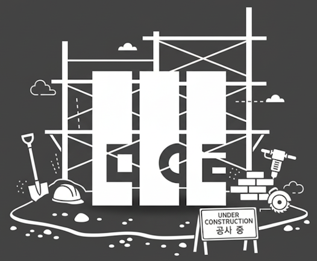

mearie.org is a personal website of Kang Seonghoon. Or... it was, because my server broke and I'm still recovering from that. You may instead find me from:
Or, you can read my résumé. Did I say I'm available for work?
A self-describing compressed archive format built around lossless recompression of common file formats. Each file is decoded by WebAssembly modules embedded in the archive itself, so a decoder can extract formats it has never seen.
A pan-Unicode hybrid bitmap monospace font, slowly drawn from scratch.
A Rust translation of Fabrice Bellard's libbf, a tiny arbitrary-precision floating-point library with full IEEE 754 semantics and transcendental functions.
A browser extension that performs OCR on images and canvases entirely in the browser, overlaying selectable text on top of the original element.
A WebAssembly 3.0 interpreter in a single C header, implementing the full deterministic profile including GC, exceptions, relaxed SIMD and memory64. Designed to run untrusted modules with predictable resource bounds.
A self-contained JPEG XL decoder, the first ever reimplementation besides libjxl. Uncovered hundreds of specification bugs along the way.
A heavyweight size-optimizing packer for JavaScript demos, based on logistic context mixing. Used by many js13kGames entries.
A no-frills jigsaw puzzle playable on desktop and mobile.
Hexadecimal floating-point literals for Rust.
A type checker and IDE extension for Lua 5.1, with a type system comparable to that of early TypeScript.
The date and time library for Rust. I was its original architect and maintainer.
Character encoding support for Rust, one of the earliest widely used Rust libraries.
Cursive Script Object Notation, a strict superset of JSON that can be comfortably written by hand.
A QR code generator in pure JavaScript.
The world's most optimizing Brainfuck-to-C compiler, or rather a decompiler.
A simple BM98-like music video game for the BMS format, packed into a single executable with every asset generated from the source code.